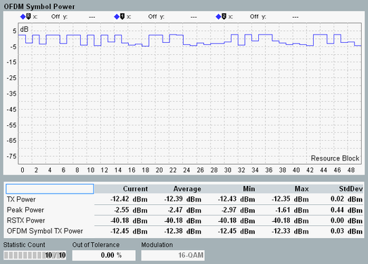

The focus of this view is on the OFDM symbol TX power derived from the 4th OFDM symbol of the measured subframe, as specified in 3GPP TS 36.141, annex F.3.3.
The 4th OFDM symbol contains exclusively PDSCH, so this power can be interpreted as data symbol power.

The diagram shows a presentation of the power in the 4th OFDM symbol of the measured subframe vs. the frequency. Each value indicates the total power of 12 subcarriers (frequency range of one resource block).
The diagram is normalized to the current OFDM symbol TX power result, displayed in the table. This result is called OSTP in annex F.3.3. It indicates the power of the 4th OFDM symbol, averaged over all subcarriers.
The figure above shows results for a signal with 10 MHz channel bandwidth and the test model E-TM3.2. Thus the signal includes 30 RBs with 16-QAM modulation for which modulation results must be measured, plus 20 RBs with QPSK modulation. The 16-QAM RBs have lower power than the QPSK RBs (16-QAM RBs below 0 dB line, QPSK RBs above 0 dB line).
- "TX Power": RMS averaged power over all samples in the subframe
- "Peak Power": peak power of all samples in the subframe
- "RSTX Power": arithmetic mean value of all reference symbol powers in the subframe, called RSTP in 3GPP TS 36.141, annex F.3.3
For other screen elements, refer to "Common View Elements".